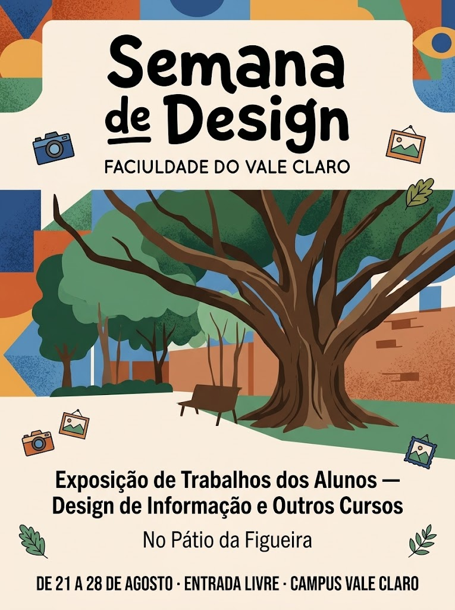

Fixado
Passei a tarde testando fontes para um cartaz. Quem diria que escolher uma letra levaria tanto tempo?
17h05
5 publicações
@JuNotasNoite
Design de Informação à noite; adoro mapas e música instrumental.
Fixado
Passei a tarde testando fontes para um cartaz. Quem diria que escolher uma letra levaria tanto tempo?
17h05
Segunda e quarta, aula às 19h. Hoje saí mais cedo porque o ônibus do campus costuma atrasar.
18h10
Ju comentou uma publicação
Nosso cartaz de Design de Informação está lá!
Exposição da Semana de Design no Pátio da Figueira

12h02
Ontem completei 19. Meu irmão disse que agora sou responsável por escolher o bolo do próximo ano
09h16
Em resposta a @nina.castro.vc
Você conseguiu chegar na aula ontem?
Consegui, Nina! O ônibus atrasou, mas peguei a revisão.
08h45